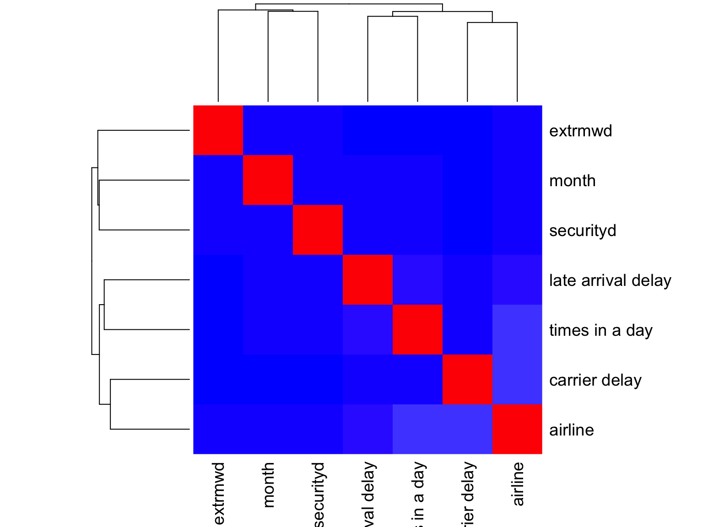
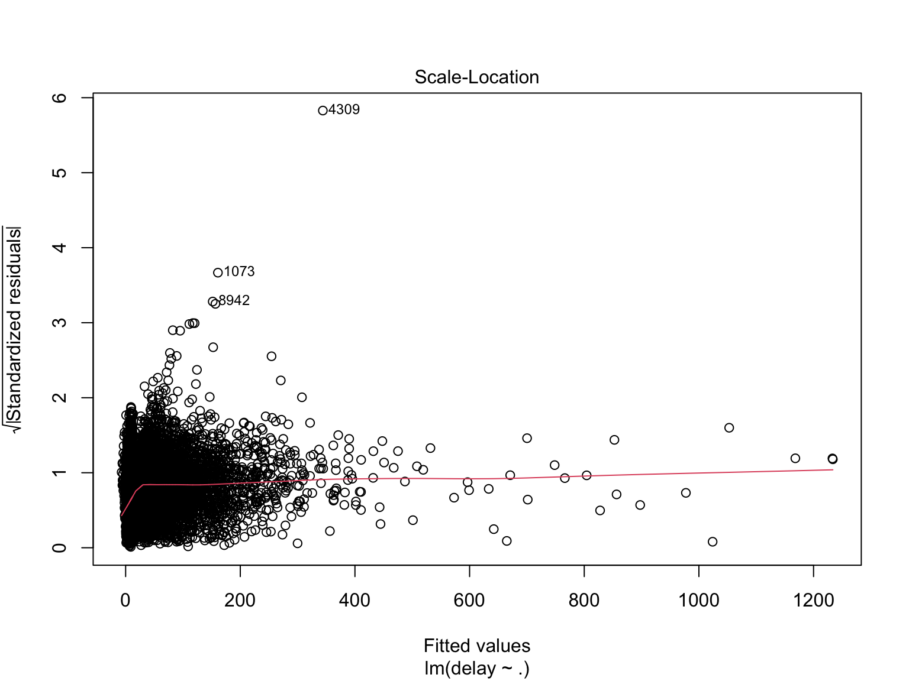
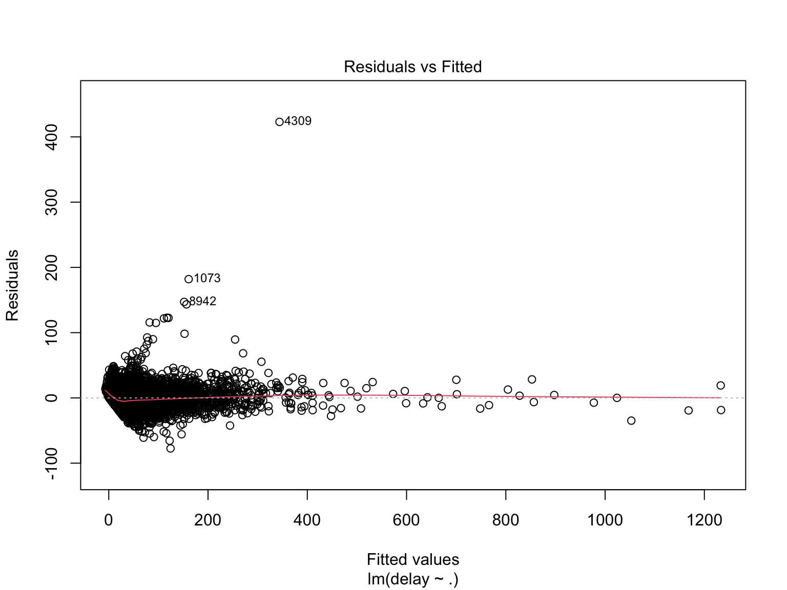

Regression_delay
Step 1: Data Wrangling
Data import
delay = read.csv("./tidied_data/delay.csv") %>%
janitor::clean_names()
h_weather = read.csv("./tidied_data/hourly_weather.csv") %>%
janitor::clean_names() Clean dataset ‘delay’
Check how many airlines
unique(delay$airline_name)## [1] "Endeavor Air" "American Airlines" "Alaska Airlines"
## [4] "JetBlue Airways" "Delta Air Lines" "United Air Lines"
## [7] "Republic Airways"7 -> ok, keep
Check how many destinations
unique(delay$destination_airport)## [1] "MSP" "DTW" "RDU" "BTV" "BNA" "ROC" "IND" "RIC" "CLE" "SYR" "BUF" "CHS"
## [13] "PWM" "SAV" "CVG" "BGR" "PIT" "LAX" "SFO" "MIA" "ORD" "CLT" "SNA" "DCA"
## [25] "PHX" "SAT" "FLL" "DFW" "AUS" "SEA" "SAN" "PDX" "PBI" "ABQ" "SLC" "MCO"
## [37] "DEN" "BOS" "TPA" "SRQ" "SJU" "RSW" "ONT" "BUR" "MSY" "SJC" "ORH" "JAX"
## [49] "LAS" "BQN" "ATL" "PSP" "IAH" "EYW" "IAD" "STT" "SMF" "BWI" "ORF" "PHL"
## [61] "CMH" "RNO" "JAC" "EGE" "PSE" "BZN"66 -> too many, remove
Keep variables of interest and date for merge purpose
(which will be removed later)
delay = delay %>%
mutate(
airline = airline_name,
hour = scheduled_hour,
delay = delay_minutes,
carrierd = delay_carrier_minutes,
extrmwd = delay_weather_minutes,
nasd = delay_national_aviation_system_minutes,
securityd = delay_security_minutes,
latarrd = delay_late_aircraft_arrival_minutes) %>%
mutate(hour = as.numeric(hour)) %>%
mutate(month = month.abb[month]) %>%
select(airline, date, month, hour, delay, carrierd, extrmwd, nasd, securityd, latarrd)check ‘NA’
sum(is.na(delay))0 -> good
Clean dataset ‘h_weather’
About the measure of temperature: Since the dry bulb temperature is
the ambient air temperature measured by regular thermometers, that is,
the temperature often mentioned in our general weather forecast. Thus,
we decide to use the variable hourly_dry_bulb_temperature
to represent temperature.
h_weather = h_weather %>%
mutate(
temperature = hourly_dry_bulb_temperature,
humidity = hourly_relative_humidity,
visibility = hourly_visibility,
wind_s = hourly_wind_speed,
hour = as.numeric(hour)) %>%
mutate(month = month.abb[month]) %>%
select(date, month, hour, temperature, humidity, visibility, wind_s)check ‘NA’
sum(is.na(h_weather))0 -> good
Merge datasets ‘delay’ and ‘hourly_weather’
raw_df = merge(x = delay, y = h_weather, by = c("date", "month", "hour"),
all.x = TRUE)check ‘NA’
sum(is.na(raw_df))0 -> good
To this step, we have our raw dataset for doing association analysis.
Since the outcome variable delay is a continuous variable,
we would do linear regression. However, there might be too many
variables so far (ignoring date we still got 12 potential
predictors), so next step will be fitting the model.
By intuition, I would set:
airline -> categorical month ->
categorical hour -> categorical (need further
categorization) and for the rest -> continuous
Inspections into the dataset
Let’s first check how each variable is roughly distributed.
Dependent variable / outcome (continuous)
See if our dependent variable delay follows a normal
distribution.
hist(raw_df$delay)
No, our dependent variable delay is not normally
distributed.
-> It is okay because for linear regression, dependent variable does not have to be normally distributed. On the other hand, the model’s residuals, do have to be normally distributed.
Independent variables / predictors (categorical)
cat_sum = raw_df %>%
select(airline, month, hour) %>%
mutate(
airline = as.factor(airline),
month = as.factor(month),
hour = as.factor(hour)
) %>%
summary(maxsum = 24)
cat_sum## airline month hour
## Alaska Airlines : 888 Dec: 9752 5 : 165
## American Airlines: 3976 Jan: 9931 6 :1180
## Delta Air Lines : 5513 Nov:10042 7 :2035
## Endeavor Air : 3711 8 :3311
## JetBlue Airways :10199 9 :2065
## Republic Airways : 5094 10: 987
## United Air Lines : 344 11:1503
## 12:1280
## 13:1697
## 14:1780
## 15:2212
## 16:1689
## 17:1795
## 18:1871
## 19:2148
## 20:1815
## 21:1487
## 22: 619
## 23: 86Independent variables / predictors (continuous)
con_sum_df = raw_df %>%
select(-date, -airline, -month, -hour)
con_sum = skim(con_sum_df) %>%
dplyr::select(-n_missing, -complete_rate) %>%
mutate(
mean = numeric.mean,
sd = numeric.sd,
histogram = numeric.hist,
var = skim_variable,
min = numeric.p0,
max = numeric.p100,
median = numeric.p50,
q1 = numeric.p25,
q3 = numeric.p75
) %>%
dplyr::select(-numeric.mean, -numeric.sd, -numeric.hist, -skim_variable, -numeric.p0, -numeric.p100, -numeric.p50, -numeric.p25, -numeric.p75) %>%
relocate(var, mean, min, q1, median, q3, max, sd, histogram)
con_sum## # A tibble: 10 × 10
## var mean min q1 median q3 max sd histogram skim_type
## <chr> <dbl> <dbl> <dbl> <dbl> <dbl> <dbl> <dbl> <chr> <chr>
## 1 delay 11.7 -27 -5 -2 9 1252 45.8 ▇▁▁▁▁ numeric
## 2 carrierd 7.31 0 0 0 0 1225 32.3 ▇▁▁▁▁ numeric
## 3 extrmwd 0.614 0 0 0 0 850 12.2 ▇▁▁▁▁ numeric
## 4 nasd 2.63 0 0 0 0 731 11.4 ▇▁▁▁▁ numeric
## 5 securityd 0.0447 0 0 0 0 137 1.48 ▇▁▁▁▁ numeric
## 6 latarrd 3.07 0 0 0 0 714 19.0 ▇▁▁▁▁ numeric
## 7 temperature 41.4 10 35 42 49 68 10.8 ▁▃▇▆▂ numeric
## 8 humidity 59.6 16 45 56 73 100 18.5 ▁▇▇▅▃ numeric
## 9 visibility 9.42 0 10 10 10 10 1.95 ▁▁▁▁▇ numeric
## 10 wind_s 11.9 0 7 11 16 32 6.22 ▅▇▇▃▁ numericNext, as mentioned above, we want to further categorize variable
hour.
Motivation:
To increase the power of our model by reducing the number of parameters involved and to be more efficient and concise.
Rationale for the categorization of hour:
Based on the previous inspection of variable hour, we
could see that: except for 5, 8, 10, 22, and 23, the frequencies of the
other classes are roughly even (between 1000-2000). Take this into
consideration, our rationale for classification will be a combination of
convention and the desire to achieve a uniform distribution.
Thus, we would categorize hour into the following 4
categories:
morning: 5-8
noon: 9-13
afternoon: 14-17
night:18-23
Now, we can start categorize hour
raw_df = raw_df %>%
mutate(hour_c = cut(hour, breaks = c(4, 8, 13, 17, 24),
labels = c("morning","noon","afternoon","night"))) %>%
select(-hour)As usual, check if it was done properly
summary(as.factor(raw_df$hour_c))## morning noon afternoon night
## 6691 7532 7476 8026sum(is.na(raw_df))## [1] 00 ‘NA’ and the distribution looks good.
Now, since we are not yet able to decide the variable type of the rest of the predictors, we need further analysis.
Step 2: Check Assumptions for Regression
Assumption 1: Linearity
Do simple linear regression for each independent variable, along with scatterplots to assess the linearity
Continuous vars
- temperature
lrTemp = lm(delay~temperature, data = raw_df)
summary(lrTemp) %>% broom::glance()## # A tibble: 1 × 8
## r.squared adj.r.squared sigma statistic p.value df df.residual nobs
## <dbl> <dbl> <dbl> <dbl> <dbl> <dbl> <int> <dbl>
## 1 0.00696 0.00693 45.7 208. 4.60e-47 1 29723 29725summary(lrTemp) %>%
broom::tidy() %>%
select(term, estimate, p.value)## # A tibble: 2 × 3
## term estimate p.value
## <chr> <dbl> <dbl>
## 1 (Intercept) 26.4 2.00e-137
## 2 temperature -0.355 4.60e- 47plot(delay~temperature, data = raw_df)- humidity
lrHum = lm(delay~humidity, data = raw_df)
summary(lrHum) %>% broom::glance()## # A tibble: 1 × 8
## r.squared adj.r.squared sigma statistic p.value df df.residual nobs
## <dbl> <dbl> <dbl> <dbl> <dbl> <dbl> <int> <dbl>
## 1 0.00285 0.00282 45.8 85.0 3.16e-20 1 29723 29725summary(lrHum) %>%
broom::tidy() %>%
select(term, estimate, p.value)## # A tibble: 2 × 3
## term estimate p.value
## <chr> <dbl> <dbl>
## 1 (Intercept) 3.80 2.26e- 5
## 2 humidity 0.133 3.16e-20plot(delay~humidity, data = raw_df)
- visibility
lrVis = lm(delay~visibility, data = raw_df)
summary(lrVis) %>% broom::glance()## # A tibble: 1 × 8
## r.squared adj.r.squared sigma statistic p.value df df.residual nobs
## <dbl> <dbl> <dbl> <dbl> <dbl> <dbl> <int> <dbl>
## 1 0.00663 0.00660 45.7 198. 6.70e-45 1 29723 29725summary(lrVis) %>%
broom::tidy() %>%
select(term, estimate, p.value)## # A tibble: 2 × 3
## term estimate p.value
## <chr> <dbl> <dbl>
## 1 (Intercept) 29.7 1.45e-113
## 2 visibility -1.91 6.70e- 45plot(delay~visibility, data = raw_df)
- wind speed
lrWin = lm(delay~wind_s, data = raw_df)
summary(lrWin) %>% broom::glance()## # A tibble: 1 × 8
## r.squared adj.r.squared sigma statistic p.value df df.residual nobs
## <dbl> <dbl> <dbl> <dbl> <dbl> <dbl> <int> <dbl>
## 1 0.000404 0.000370 45.8 12.0 0.000529 1 29723 29725summary(lrWin) %>%
broom::tidy() %>%
select(term, estimate, p.value)## # A tibble: 2 × 3
## term estimate p.value
## <chr> <dbl> <dbl>
## 1 (Intercept) 9.94 1.34e-66
## 2 wind_s 0.148 5.29e- 4plot(delay~wind_s, data = raw_df)- carrier delay
lrCar = lm(delay~carrierd, data = raw_df)
summary(lrCar) %>% broom::glance()## # A tibble: 1 × 8
## r.squared adj.r.squared sigma statistic p.value df df.residual nobs
## <dbl> <dbl> <dbl> <dbl> <dbl> <dbl> <int> <dbl>
## 1 0.654 0.654 27.0 56271. 0 1 29723 29725summary(lrCar) %>%
broom::tidy() %>%
select(term, estimate, p.value)## # A tibble: 2 × 3
## term estimate p.value
## <chr> <dbl> <dbl>
## 1 (Intercept) 3.31 3.30e-94
## 2 carrierd 1.15 0plot(delay~carrierd, data = raw_df)
- extreme weather delay
lrExw = lm(delay~extrmwd, data = raw_df)
summary(lrExw) %>% broom::glance()## # A tibble: 1 × 8
## r.squared adj.r.squared sigma statistic p.value df df.residual nobs
## <dbl> <dbl> <dbl> <dbl> <dbl> <dbl> <int> <dbl>
## 1 0.0805 0.0805 44.0 2603. 0 1 29723 29725summary(lrExw) %>%
broom::tidy() %>%
select(term, estimate, p.value)## # A tibble: 2 × 3
## term estimate p.value
## <chr> <dbl> <dbl>
## 1 (Intercept) 11.1 0
## 2 extrmwd 1.07 0plot(delay~extrmwd, data = raw_df)
- NAS delay
lrNas = lm(delay~nasd, data = raw_df)
summary(lrNas) %>% broom::glance()## # A tibble: 1 × 8
## r.squared adj.r.squared sigma statistic p.value df df.residual nobs
## <dbl> <dbl> <dbl> <dbl> <dbl> <dbl> <int> <dbl>
## 1 0.0299 0.0299 45.2 917. 2.05e-198 1 29723 29725summary(lrNas) %>%
broom::tidy() %>%
select(term, estimate, p.value)## # A tibble: 2 × 3
## term estimate p.value
## <chr> <dbl> <dbl>
## 1 (Intercept) 9.89 6.55e-290
## 2 nasd 0.694 2.05e-198plot(delay~nasd, data = raw_df)
- security delay
lrSec = lm(delay~securityd, data = raw_df)
summary(lrSec) %>% broom::glance()## # A tibble: 1 × 8
## r.squared adj.r.squared sigma statistic p.value df df.residual nobs
## <dbl> <dbl> <dbl> <dbl> <dbl> <dbl> <int> <dbl>
## 1 0.00204 0.00200 45.8 60.7 6.92e-15 1 29723 29725summary(lrSec) %>%
broom::tidy() %>%
select(term, estimate, p.value) ## # A tibble: 2 × 3
## term estimate p.value
## <chr> <dbl> <dbl>
## 1 (Intercept) 11.6 0
## 2 securityd 1.40 6.92e-15plot(delay~securityd, data = raw_df)
- late arrival delay
lrLat = lm(delay~latarrd, data = raw_df)
summary(lrLat) %>% broom::glance()## # A tibble: 1 × 8
## r.squared adj.r.squared sigma statistic p.value df df.residual nobs
## <dbl> <dbl> <dbl> <dbl> <dbl> <dbl> <int> <dbl>
## 1 0.310 0.310 38.1 13339. 0 1 29723 29725summary(lrLat) %>%
broom::tidy() %>%
select(term, estimate, p.value)## # A tibble: 2 × 3
## term estimate p.value
## <chr> <dbl> <dbl>
## 1 (Intercept) 7.57 3.65e-246
## 2 latarrd 1.35 0plot(delay~latarrd, data = raw_df)
Categorical vars
First, tell R that they are categorical variables
raw_df =
raw_df %>%
mutate(
month = fct_infreq(as.factor(month)),
hour_c = fct_infreq(hour_c),
airline = fct_infreq(airline)
)- month
lrMon = lm(delay~month, data = raw_df)
summary(lrMon) %>% broom::glance()## # A tibble: 1 × 8
## r.squared adj.r.squared sigma statistic p.value df df.residual nobs
## <dbl> <dbl> <dbl> <dbl> <dbl> <dbl> <int> <dbl>
## 1 0.00939 0.00933 45.6 141. 1.23e-61 2 29722 29725summary(lrMon) %>%
broom::tidy() %>%
select(term, estimate, p.value)## # A tibble: 3 × 3
## term estimate p.value
## <chr> <dbl> <dbl>
## 1 (Intercept) 6.53 1.69e-46
## 2 monthJan 10.8 1.05e-62
## 3 monthDec 4.77 1.97e-13- hour
lrHour = lm(delay~hour_c, data = raw_df)
summary(lrHour) %>% broom::glance()## # A tibble: 1 × 8
## r.squared adj.r.squared sigma statistic p.value df df.residual nobs
## <dbl> <dbl> <dbl> <dbl> <dbl> <dbl> <int> <dbl>
## 1 0.00934 0.00924 45.6 93.4 3.65e-60 3 29721 29725summary(lrHour) %>%
broom::tidy() %>%
select(term, estimate, p.value)## # A tibble: 4 × 3
## term estimate p.value
## <chr> <dbl> <dbl>
## 1 (Intercept) 18.2 7.34e-273
## 2 hour_cnoon -8.54 2.39e- 31
## 3 hour_cafternoon -6.21 2.62e- 17
## 4 hour_cmorning -12.1 7.68e- 58- airline
lrAL = lm(delay~airline, data = raw_df)
summary(lrAL) %>% broom::glance()## # A tibble: 1 × 8
## r.squared adj.r.squared sigma statistic p.value df df.residual nobs
## <dbl> <dbl> <dbl> <dbl> <dbl> <dbl> <int> <dbl>
## 1 0.0368 0.0366 45.0 189. 2.90e-237 6 29718 29725summary(lrAL) %>%
broom::tidy() %>%
select(term, estimate, p.value)## # A tibble: 7 × 3
## term estimate p.value
## <chr> <dbl> <dbl>
## 1 (Intercept) 23.1 0
## 2 airlineDelta Air Lines -14.0 1.08e- 76
## 3 airlineRepublic Airways -21.0 2.81e-161
## 4 airlineAmerican Airlines -13.3 5.48e- 56
## 5 airlineEndeavor Air -21.6 7.83e-137
## 6 airlineAlaska Airlines -19.8 3.88e- 36
## 7 airlineUnited Air Lines -12.9 1.85e- 7The above results were not very straightforward, but give us a sense
that we could include carrierd and latarrd in
to the final model, according to the R-squared values.
Assumption 2: Independence of observations
Use correlation to assess the relationship between all independent variables and make sure they aren’t too highly correlated.
First, it’s time to remove variable date as it is not
one of the predictors
raw_df = raw_df %>%
select(-date)Correlation matrix
NOTE: This approach is not meaningful for our nominal
predictors month, airline, or
hour_c. you can ignore them.
cor = raw_df %>%
select(-delay) %>%
mutate(
airline = as.numeric(airline),
month = as.numeric(month),
hour_c = as.numeric(hour_c)
) %>%
cor(method = c("pearson", "kendall", "spearman"))
round(cor, 2)## month airline carrierd extrmwd nasd securityd latarrd temperature
## month 1.00 0.00 0.04 0.01 0.05 0.00 0.01 -0.15
## airline 0.00 1.00 -0.12 0.00 0.00 -0.02 -0.04 0.01
## carrierd 0.04 -0.12 1.00 -0.01 0.05 0.00 0.14 -0.05
## extrmwd 0.01 0.00 -0.01 1.00 0.07 0.00 0.03 -0.04
## nasd 0.05 0.00 0.05 0.07 1.00 0.00 0.04 -0.01
## securityd 0.00 -0.02 0.00 0.00 0.00 1.00 0.01 0.00
## latarrd 0.01 -0.04 0.14 0.03 0.04 0.01 1.00 -0.05
## temperature -0.15 0.01 -0.05 -0.04 -0.01 0.00 -0.05 1.00
## humidity 0.09 -0.02 0.04 0.02 0.13 0.01 0.03 0.22
## visibility -0.18 0.00 -0.06 -0.06 -0.16 0.00 -0.04 -0.10
## wind_s -0.06 0.00 0.00 0.01 0.02 -0.01 0.04 -0.04
## hour_c 0.01 0.04 -0.05 -0.01 0.00 0.00 -0.06 -0.03
## humidity visibility wind_s hour_c
## month 0.09 -0.18 -0.06 0.01
## airline -0.02 0.00 0.00 0.04
## carrierd 0.04 -0.06 0.00 -0.05
## extrmwd 0.02 -0.06 0.01 -0.01
## nasd 0.13 -0.16 0.02 0.00
## securityd 0.01 0.00 -0.01 0.00
## latarrd 0.03 -0.04 0.04 -0.06
## temperature 0.22 -0.10 -0.04 -0.03
## humidity 1.00 -0.54 -0.16 0.07
## visibility -0.54 1.00 0.07 -0.05
## wind_s -0.16 0.07 1.00 0.01
## hour_c 0.07 -0.05 0.01 1.00color = colorRampPalette(c("Blue", "white", "Red"))(20)
heatmap(x = cor, col = color, symm = TRUE)
Looks good, pretty independent.
*Could considering removing 1 of (visibility and
humidity) as they have a moderate correlation coefficient
(-0.54)
Assumption 3: Normality
Check this after we make the model.
Assumption 4: Homoscedasticity
Check this after we make the model.
Step 3: Building linear regression model
Perform linear regression with all predictors
lm_all = lm(delay ~ ., data = raw_df)
summary(lm_all)##
## Call:
## lm(formula = delay ~ ., data = raw_df)
##
## Residuals:
## Min 1Q Median 3Q Max
## -72.31 -5.46 -1.80 2.96 466.00
##
## Coefficients:
## Estimate Std. Error t value Pr(>|t|)
## (Intercept) 1.817474 0.693937 2.619 0.008821 **
## monthJan -0.014309 0.207595 -0.069 0.945048
## monthDec 0.559148 0.157783 3.544 0.000395 ***
## airlineDelta Air Lines -0.853021 0.179019 -4.765 1.90e-06 ***
## airlineRepublic Airways -6.817158 0.184339 -36.982 < 2e-16 ***
## airlineAmerican Airlines -1.775304 0.199506 -8.899 < 2e-16 ***
## airlineEndeavor Air -5.330495 0.205239 -25.972 < 2e-16 ***
## airlineAlaska Airlines -6.551832 0.372406 -17.593 < 2e-16 ***
## airlineUnited Air Lines -3.367266 0.582855 -5.777 7.67e-09 ***
## carrierd 1.046131 0.001951 536.255 < 2e-16 ***
## extrmwd 1.013910 0.005062 200.309 < 2e-16 ***
## nasd 0.399336 0.005482 72.842 < 2e-16 ***
## securityd 1.081225 0.041482 26.065 < 2e-16 ***
## latarrd 1.058872 0.003298 321.033 < 2e-16 ***
## temperature -0.037177 0.008367 -4.443 8.88e-06 ***
## humidity -0.002925 0.004312 -0.678 0.497590
## visibility 0.295628 0.038703 7.638 2.27e-14 ***
## wind_s -0.005066 0.010165 -0.498 0.618192
## hour_cnoon -2.034640 0.177463 -11.465 < 2e-16 ***
## hour_cafternoon -0.801831 0.175172 -4.577 4.73e-06 ***
## hour_cmorning -3.278425 0.179473 -18.267 < 2e-16 ***
## ---
## Signif. codes: 0 '***' 0.001 '**' 0.01 '*' 0.05 '.' 0.1 ' ' 1
##
## Residual standard error: 10.59 on 29704 degrees of freedom
## Multiple R-squared: 0.9467, Adjusted R-squared: 0.9467
## F-statistic: 2.639e+04 on 20 and 29704 DF, p-value: < 2.2e-16Note:
R-squared = 0.9467 -> good
F-statistic: F-value = 2.639e+04 -> large, variance between
>> variance within, good
p-value < 2.2e-16 -> small, significant, good
The F-test of overall significance indicates whether this current linear regression model provides a better fit to the data than a model that contains no independent variables.
humidity -> p-value = 0.497590 (not significant)
under this model -> given what’s mentioned above, remove
wind_s -> p-value = 0.618192 (not significant) under
this model -> remove
Fit lm without wind_s or humidity
raw_df_10 = raw_df %>%
select(-humidity, -wind_s)
lm_10 = lm(delay ~ ., data = raw_df_10)
summary(lm_10)##
## Call:
## lm(formula = delay ~ ., data = raw_df_10)
##
## Residuals:
## Min 1Q Median 3Q Max
## -72.27 -5.46 -1.80 2.96 466.11
##
## Coefficients:
## Estimate Std. Error t value Pr(>|t|)
## (Intercept) 1.547322 0.590098 2.622 0.008742 **
## monthJan -0.041123 0.204769 -0.201 0.840834
## monthDec 0.556387 0.157480 3.533 0.000411 ***
## airlineDelta Air Lines -0.850964 0.178994 -4.754 2.00e-06 ***
## airlineRepublic Airways -6.814635 0.184303 -36.975 < 2e-16 ***
## airlineAmerican Airlines -1.776285 0.199482 -8.904 < 2e-16 ***
## airlineEndeavor Air -5.327340 0.205146 -25.969 < 2e-16 ***
## airlineAlaska Airlines -6.554049 0.372371 -17.601 < 2e-16 ***
## airlineUnited Air Lines -3.362436 0.582786 -5.770 8.03e-09 ***
## carrierd 1.046114 0.001951 536.308 < 2e-16 ***
## extrmwd 1.013883 0.005061 200.323 < 2e-16 ***
## nasd 0.399011 0.005466 72.993 < 2e-16 ***
## securityd 1.081295 0.041479 26.068 < 2e-16 ***
## latarrd 1.058777 0.003296 321.271 < 2e-16 ***
## temperature -0.038891 0.008037 -4.839 1.31e-06 ***
## visibility 0.307304 0.033640 9.135 < 2e-16 ***
## hour_cnoon -2.014486 0.172905 -11.651 < 2e-16 ***
## hour_cafternoon -0.784077 0.172651 -4.541 5.61e-06 ***
## hour_cmorning -3.292524 0.178558 -18.440 < 2e-16 ***
## ---
## Signif. codes: 0 '***' 0.001 '**' 0.01 '*' 0.05 '.' 0.1 ' ' 1
##
## Residual standard error: 10.58 on 29706 degrees of freedom
## Multiple R-squared: 0.9467, Adjusted R-squared: 0.9467
## F-statistic: 2.932e+04 on 18 and 29706 DF, p-value: < 2.2e-16Note:
R-squared = 0.9467 -> same, good
F-statistic: F-value = 2.932e+04 -> close, large, variance between >> variance within, good p-value < 2.2e-16 -> same, small, significant, good
Fit the best subset linear model
The function regsubsets() will produce the best model with 1 predictor, the best model with 2 predictors, 3 predictors, … up to 14 predictors(nvmax=14 option).
library(leaps)
bestsub.lm <- regsubsets(delay ~ .,
data = raw_df_10, nvmax = 18)
sum.bestsub.lm = summary(bestsub.lm)We have 18 predictor parameters, and the sample size 29725 will be sufficient for it (“One in ten” rule)
Check some measures to select the best subset model
Note:
A small value of Cp means that the model is relatively precise.
A larger R-squared value means that the independent variables explain a larger percentage of the variation in the independent variable.
A lower BIC implies either fewer explanatory variables, better fit, or both.
cbind(
Cp = summary(bestsub.lm)$cp,
r2 = summary(bestsub.lm)$rsq,
BIC = summary(bestsub.lm)$bic
)## Cp r2 BIC
## [1,] 162974.57340 0.6543593 -31557.92
## [2,] 50807.45804 0.8555586 -57483.45
## [3,] 8320.51509 0.9317716 -79767.28
## [4,] 3112.94055 0.9411161 -84135.26
## [5,] 2161.15122 0.9428269 -85001.40
## [6,] 1443.34944 0.9441180 -85670.06
## [7,] 974.92935 0.9449618 -86112.02
## [8,] 704.72935 0.9454501 -86366.59
## [9,] 426.64945 0.9459524 -86631.31
## [10,] 292.63274 0.9461964 -86755.50
## [11,] 195.17830 0.9463748 -86843.92
## [12,] 138.09244 0.9464808 -86892.43
## [13,] 101.27835 0.9465504 -86920.82
## [14,] 75.07943 0.9466010 -86938.66
## [15,] 52.67099 0.9466448 -86952.74
## [16,] 33.22710 0.9466832 -86963.88
## [17,] 17.04033 0.9467159 -86971.77
## [18,] 19.00000 0.9467159 -86961.52which.max(sum.bestsub.lm$rsq)## [1] 18sum.bestsub.lm$which[18,]## (Intercept) monthJan monthDec
## TRUE TRUE TRUE
## airlineDelta Air Lines airlineRepublic Airways airlineAmerican Airlines
## TRUE TRUE TRUE
## airlineEndeavor Air airlineAlaska Airlines airlineUnited Air Lines
## TRUE TRUE TRUE
## carrierd extrmwd nasd
## TRUE TRUE TRUE
## securityd latarrd temperature
## TRUE TRUE TRUE
## visibility hour_cnoon hour_cafternoon
## TRUE TRUE TRUE
## hour_cmorning
## TRUEAll true -> keep all
Fit the regression model
Best_lm = lm(delay ~ .,
data = raw_df_10)
summary(Best_lm) %>% broom::glance()## # A tibble: 1 × 8
## r.squared adj.r.squared sigma statistic p.value df df.residual nobs
## <dbl> <dbl> <dbl> <dbl> <dbl> <dbl> <int> <dbl>
## 1 0.947 0.947 10.6 29322. 0 18 29706 29725summary(Best_lm) %>%
broom::tidy() %>%
select(term, estimate, p.value)## # A tibble: 19 × 3
## term estimate p.value
## <chr> <dbl> <dbl>
## 1 (Intercept) 1.55 8.74e- 3
## 2 monthJan -0.0411 8.41e- 1
## 3 monthDec 0.556 4.11e- 4
## 4 airlineDelta Air Lines -0.851 2.00e- 6
## 5 airlineRepublic Airways -6.81 1.25e-292
## 6 airlineAmerican Airlines -1.78 5.66e- 19
## 7 airlineEndeavor Air -5.33 4.93e-147
## 8 airlineAlaska Airlines -6.55 5.44e- 69
## 9 airlineUnited Air Lines -3.36 8.03e- 9
## 10 carrierd 1.05 0
## 11 extrmwd 1.01 0
## 12 nasd 0.399 0
## 13 securityd 1.08 3.89e-148
## 14 latarrd 1.06 0
## 15 temperature -0.0389 1.31e- 6
## 16 visibility 0.307 6.95e- 20
## 17 hour_cnoon -2.01 2.66e- 31
## 18 hour_cafternoon -0.784 5.61e- 6
## 19 hour_cmorning -3.29 1.67e- 75Check for residual normality
library("olsrr")##
## Attaching package: 'olsrr'## The following object is masked from 'package:datasets':
##
## riversols_plot_resid_fit(Best_lm)
# residual vs fitted
plot(Best_lm, 1)
#qq plot
plot(Best_lm, 2)
Check for heteroscadacity
plot(Best_lm, 3)
Step 4: Fit stratum-specific models
Stratum of interest:
month
airline
hour_c
Fit month-specific model
we can nest within months and fit month-specific models associating delay with the rest of variables
nest_lm_m =
raw_df_10 %>%
select(-airline, -hour_c) %>%
nest(data = -month) %>%
mutate(
models = map(data, ~lm(delay ~ ., data = .x)),
results = map(models, broom::tidy)) %>%
select(-data, -models) %>%
unnest(results)
nest_lm_m %>%
select(month, term, estimate) %>%
mutate(term = fct_inorder(term)) %>%
pivot_wider(
names_from = term, values_from = estimate) %>%
knitr::kable(digits = 3)| month | (Intercept) | carrierd | extrmwd | nasd | securityd | latarrd | temperature | visibility |
|---|---|---|---|---|---|---|---|---|
| Nov | -7.645 | 1.072 | 0.896 | 0.457 | 1.074 | 1.081 | -0.044 | 0.835 |
| Dec | -2.538 | 1.048 | 1.020 | 0.465 | 1.249 | 1.064 | -0.021 | 0.274 |
| Jan | -1.592 | 1.058 | 1.024 | 0.284 | 1.139 | 1.062 | -0.051 | 0.286 |
Fit airline-specific model
we can nest within airlines and fit airline-specific models associating delay with the rest of variables
nest_lm_a =
raw_df_10 %>%
select(-month, -hour_c) %>%
nest(data = -airline) %>%
mutate(
models = map(data, ~lm(delay ~ ., data = .x)),
results = map(models, broom::tidy)) %>%
select(-data, -models) %>%
unnest(results)
nest_lm_a %>%
select(airline, term, estimate) %>%
mutate(term = fct_inorder(term)) %>%
pivot_wider(
names_from = term, values_from = estimate) %>%
knitr::kable(digits = 3)| airline | (Intercept) | carrierd | extrmwd | nasd | securityd | latarrd | temperature | visibility |
|---|---|---|---|---|---|---|---|---|
| JetBlue Airways | 1.050 | 1.047 | 1.034 | 0.390 | 1.046 | 1.071 | -0.082 | 0.410 |
| Endeavor Air | -14.745 | 1.068 | 0.965 | 0.765 | 1.534 | 1.063 | 0.011 | 1.040 |
| Delta Air Lines | -0.682 | 1.073 | 1.027 | 0.292 | 1.623 | 1.126 | -0.023 | 0.227 |
| American Airlines | -1.337 | 1.033 | 1.036 | 0.212 | 1.034 | 1.044 | -0.008 | 0.188 |
| Republic Airways | -4.601 | 1.064 | 1.058 | 0.091 | 1.188 | 1.056 | 0.012 | -0.022 |
| Alaska Airlines | -10.861 | 1.105 | 1.149 | 0.230 | NA | 1.059 | 0.108 | 0.177 |
| United Air Lines | -7.223 | 1.007 | 0.804 | 0.477 | NA | 1.135 | 0.069 | 0.217 |
Fit hour-specific model
we can nest within hour categories and fit hour-specific models associating delay with the rest of variables
nest_lm_h =
raw_df_10 %>%
select(-airline, -month) %>%
nest(data = -hour_c) %>%
mutate(
models = map(data, ~lm(delay ~ ., data = .x)),
results = map(models, broom::tidy)) %>%
select(-data, -models) %>%
unnest(results)
nest_lm_h %>%
select(hour_c, term, estimate) %>%
mutate(term = fct_inorder(term)) %>%
pivot_wider(
names_from = term, values_from = estimate) %>%
knitr::kable(digits = 3)| hour_c | (Intercept) | carrierd | extrmwd | nasd | securityd | latarrd | temperature | visibility |
|---|---|---|---|---|---|---|---|---|
| noon | -4.138 | 1.054 | 1.037 | 0.383 | 1.125 | 1.035 | -0.022 | 0.372 |
| afternoon | -4.010 | 1.040 | 0.980 | 0.610 | 1.062 | 1.054 | -0.047 | 0.491 |
| night | 2.940 | 1.057 | 1.036 | 0.147 | 1.196 | 1.103 | -0.063 | 0.069 |
| morning | -2.324 | 1.080 | 0.998 | 0.310 | 1.247 | 1.057 | -0.027 | 0.126 |